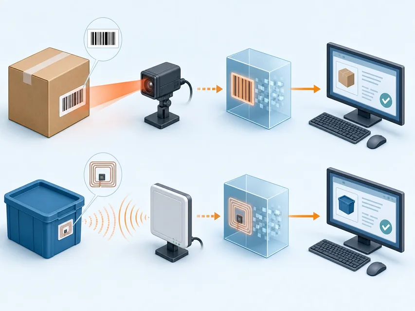
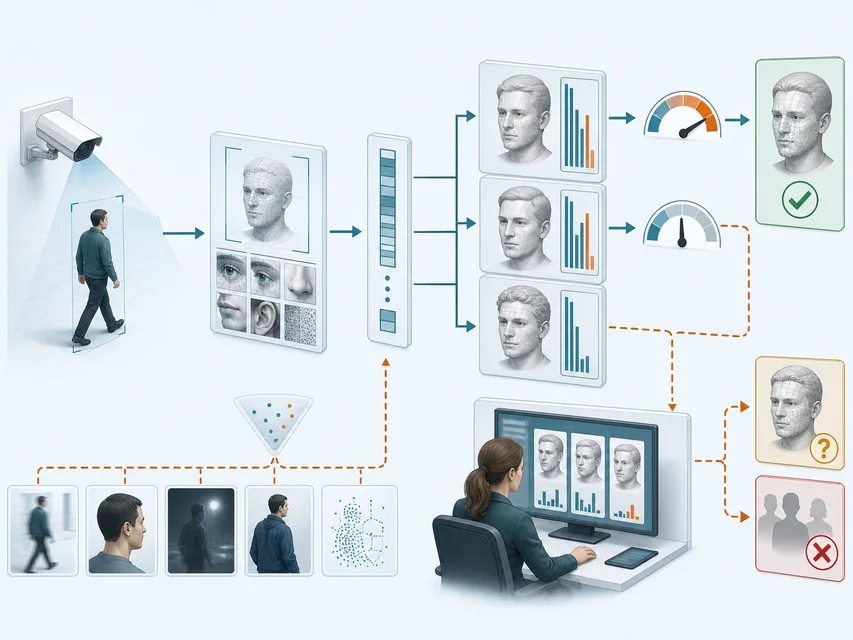

唯一性
在规定语境中区分对象或类别
让系统知道数据属于哪个对象
 VER. 2608
Built with impress.js
VER. 2608
Built with impress.js
以共享车辆为例，解释编号如何绑定到车辆、何时更新或停用
系统依照使用场景和分配规则，将编号对应到对象
标：目标对象 → 标记与分配
识：识别者在语境中读取／解析 → 对象的标识结果
设备、实体物、人或一类等价物
读取、观察或推断对象标识的设备与系统
设计、分配和呈现编码序列或符号
通过媒介、协议或模型解析出对象的标识
系统依照编号分配与解析规则，把数据关联到对象
标识区分对象，认证核验身份，授权限定操作
在规定语境中区分对象或类别
防止未授权增加、篡改或删除
限制谁能读取身份信息、把不同记录关联起来或追踪对象
遵循格式、分配和解析规则
| 信息 | 填写判断 | 填写证据 |
|---|---|---|
| 设备序列号 | 填写 | 填写 |
| 同型号商品条码 | 填写 | 填写 |
| 传感器读数 | 填写 | 填写 |
| 人脸特征向量 | 填写 | 填写 |
说明标识区分的对象、有效范围、读取权限和保护措施
本教材按编码读取与特征推断区分；“合作”不表示当事人同意
对象按约定呈现或返回编码
识别者按规则读取、解码和校验
条码、射频识别 RFID 是常见例子
识别者从图像等特征推断字符或身份
例：人脸识别、车牌识别
车牌虽由人安装，识别仍靠图像推断；本教材按识别方式分类
读取权限、错误复核与身份轨迹保护是两类识别的共同要求
| 维度 | 合作式识别 | 非合作式识别 |
|---|---|---|
| 证据 | 编码、协议和返回数据 | 图像、字符、生物特征或行为 |
| 技术 | 编码、解码、检错与纠错 | 特征工程、数据集与模型匹配 |
| 风险 | 标签复制、读取冲突、越权读取 | 误识、拒识、群体偏差和隐私暴露 |
| 复核 | 校验码、协议与人工抽查 | 阈值、置信度与人工复核 |
| 场景 | 填写识别关系 | 填写依据 |
|---|---|---|
| 手机扫描商品码 | 填写 | 填写 |
| 阅读器批量读取标签 | 填写 | 填写 |
| 摄像头识别车牌 | 填写 | 填写 |
| 门禁摄像头识别人脸 | 填写 | 填写 |
一维／二维条码按信息组织区分；RFID 依靠射频交互
上方：条码（编码 → 图案 → 光学获取 → 解码／应用）
下方：RFID（阅读器 → 射频交互 → 标签 → 返回标识）
一维条码沿一个方向组织条／空；二维在两个方向组织模块，容量通常更高，部分制式支持纠错。光学读取要求条码可见、可对准

编码结构和读取条件共同决定结果
按条码制式设计数据符、定界结构和校验或纠错信息
把标识编码成可印刷或显示的图案
用光学或摄像头获取条码图案
定位条、空或模块并解码；应用再把编码映射到对象
静区、方向、光照、污损和纠错都会影响条码识别
品类编码与序列号共同区分约定范围内的单件对象
| 字段 | 教学示例 | 区分什么 |
|---|---|---|
| 01：GTIN | 00000000000000 | 同一商品类别；本例为虚构占位值 |
| 21：序列号 | DEMO-001 / DEMO-002 | 同一类别中的不同实物 |
| 平台映射 | soil-01 / soil-02 | 本系统内的设备对象 |
URI 结构示例：https://example.org/01/00000000000000/21/DEMO-001
以被动标签为例：阅读器发出查询，标签从射频场取能并返回数据
下行：阅读器 → 天线 → 供能／查询 → 标签
上行：标签 → 天线 → 返回标识 → 阅读器解析
发送查询和射频能量，接收标签响应
在电路信号与无线电波之间转换
按类型取能，保存并返回标识数据
批量读取需处理标签响应冲突、环境干扰和越权读取
读取距离、金属或液体干扰、冲突、权限和注销共同影响方案选择
从阅读器射频场获得工作能量
结构简单，依赖射频取能条件
自带电源，无需从阅读器取能；通常通信距离更大
维护人员须检查电池，停用时注销记录
电池供内部电路工作
通信由外部射频供能
兼顾供能与通信距离
读到标签 ID 后须核验身份与权限，并记录读取者和时间
| 现象 | 写出要处理的问题 | 填写证据 |
|---|---|---|
| 多个标签同时响应 | 填写 | 填写 |
| 金属环境读写不稳 | 填写 | 填写 |
| 标签可被未授权读取 | 填写 | 填写 |
| 旧标签仍可进入系统 | 填写 | 填写 |
维护人员检查射频干扰、标签有效期与读取权限
识别者从特征推断身份，结果带有不确定性
图像 → 区域定位与预处理 → 特征
与登记数据或模型匹配 → 身份候选＋置信度 → 接受、拒绝或人工复核
目标区域是图像中的局部；系统按匹配阈值与风险决定是否人工复核

识别规则规定接受阈值、拒识重试方式、误识复核人员与申诉渠道
01
02
03
04
05获取图像或信号
→ 提取特征表示
→ 检索或模型匹配
→ 输出身份候选与置信度
→ 接受、拒绝或人工复核| 结果 | 填写后续动作 | 填写证据 |
|---|---|---|
| 车牌识别得到某车辆候选 | 填写 | 填写 |
| 人脸匹配得到某账户候选 | 填写 | 填写 |
| 光学字符识别 OCR 读出快递单号 | 填写 | 填写 |
| 未找到匹配特征 | 填写 | 填写 |
OCR 编号可用于物流查询；涉及拒绝进入、处罚的人脸或车牌判断应配套复核与申诉
平台记录各编号对应的车辆及更新、停用时间
| 主体 | 可能使用的标识 | 关注问题 |
|---|---|---|
| 用户 | 二维码内的车辆编号 | 易读、授权和防冒用 |
| 设备 | 蓝牙地址、设备序列号 | 通信、绑定和替换 |
| 平台 | 平台 ID／主键 | 关联、审计和生命周期 |
| 维护人员 | 可见编号或标签 | 快速发现、调度和维修 |
平台须维护同一车辆的多编号映射，并注明内部 ID 的有效范围
B017 对应平台对象 vehicle-17；本例同一天 10:00 完成换锁
| 平台对象 | 车锁编号 | 绑定有效时间 |
|---|---|---|
| vehicle-17 | L055（旧锁） | 08:00 ≤ 时间 < 10:00 |
| vehicle-17 | L056（新锁） | 10:00 起，尚未结束 |
二维码内容与车身编号同为 B017，平台均映射到 vehicle-17
换锁只更新车锁绑定；车辆编号和平台对象不变，旧记录保留供追溯
本题检查绑定有效期，身份认证与操作授权分别核对
| 请求声称的绑定 | 当前是否有效 | 下一步处理 |
|---|---|---|
| L055 → vehicle-17 | 核对有效时间 | 写出处理理由 |
| L056 → vehicle-17 | 核对有效时间 | 写出处理理由 |
有效绑定说明编号对应哪辆车；认证核验发信者，授权决定能否开锁
写明编号的有效范围、读取权限和换件改绑规则
01
02
03
04
05
06识别车辆与读取者
→ 读取或推断编号
→ 查询绑定与有效期
→ 核对身份和权限
→ 使用、更新或注销
→ 留下操作记录确定车辆、读取者与被追踪对象
选择光、电、射频或声音，说明采集方法与匹配条件
明确绑定、有效期、改绑、注销与维护人
检查误识、信息泄露、权限和追查方法
停用仅修改本次内存副本；本程序不核验实物、身份或权限
沿 B017 换锁记录，说明用户、设备、平台和维修人员怎样核对编号